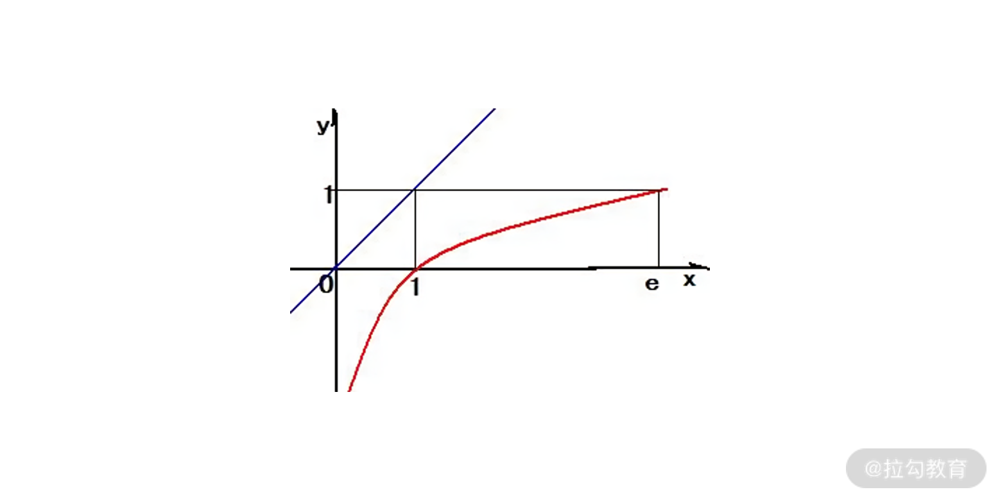

- 00 开篇词 数学，编程能力的营养根基.md.html
- 01 从计数开始，程序员必知必会的数制转换法.md.html
- 02 逻辑与沟通，怎样才能讲出有逻辑的话？.md.html
- 03 用数学决策，如何规划好投入、转化和产出？.md.html
- 04 万物可数学，经典公式是如何在生活中应用的？.md.html
- 05 求极值：如何找到复杂业务的最优解？.md.html
- 06 向量及其导数：计算机如何完成对海量高维度数据计算？.md.html
- 07 线性回归：如何在离散点中寻找数据规律？.md.html
- 08 加乘法则：如何计算复杂事件发生的概率？.md.html
- 09 似然估计：如何利用 MLE 对参数进行估计？.md.html
- 10 信息熵：事件的不确定性如何计算？.md.html
- 11 灰度实验：如何设计灰度实验并计算实验的收益？.md.html
- 12 统计学方法：如何证明灰度实验效果不是偶然得到的？.md.html
- 13 复杂度：如何利用数学推导对程序进行优化？.md.html
- 14 程序的循环：如何利用数学归纳法进行程序开发？.md.html
- 15 递归：如何计算汉诺塔问题的移动步数？.md.html
- 16 二分法：如何利用指数爆炸优化程序？.md.html
- 17 动态规划：如何利用最优子结构解决问题？.md.html
- 18 AI 入门：利用 3 个公式搭建最简 AI 框架.md.html
- 19 逻辑回归：如何让计算机做出二值化决策？.md.html
- 20 决策树：如何对 NP 难复杂问题进行启发式求解？.md.html
- 21 神经网络与深度学习：计算机是如何理解图像、文本和语音的？.md.html
- 22 面试中那些坑了无数人的算法题.md.html
- 23 站在生活的十字路口，如何用数学抉择？.md.html
- 24 结束语 数学底子好，学啥都快.md.html
00 开篇词 数学，编程能力的营养根基
你好，我是公瑾，欢迎来到《程序员的数学课》。一些同学可能知道，之前我在拉勾教育就开设了一个[《数据结构与算法》]课程，目的是帮助大家提升编码能力，打牢代码基础，在结课时也受到许多同学的好评，表示所讲的内容在面试和工作中都很有实用性。
编程一类的基础能力固然重要，但这些依旧不是程序员全部的“立足之本”。个人角度而言，从我在中科院的博士研究生经历，再到后来从事机器学习、数据挖掘等算法研发工作，都是数学作为我的基础思维能力支撑我一路走来。
程序员为什么要注重数学？
在[《数据结构与算法》]课程中，许多留言问题高频集中在：复杂度如何计算、某个代码优化是否降低了时间复杂度，或者是动态规划的状态转移方程问题，等等。这的确是在学习数据结构中遇到的困难，但剥离了外壳之后，你会发现本质上都是数学问题。
举个例子，对于一个有序数组中查找目标值的问题，应该采用二分查找算法。而且随着数组元素越来越多，二分查找相对全局遍历而言，性能上的优势会越来越明显。从数学视角来看，这是因为当 x 很大时，lnx <<x。比如 x=100，ln100=4.6 << 100。

y=lnx 与 y=x 的函数图
可能许多同学知道二分查找效率更高，但二分查找的代码，是需要采用递归进行实现的。很多同学为了实现方便，就会考虑采用暴力搜索的查找方式，也就是一个 for 循环搞定。但如果你知道了它背后的数学原理，并且深刻体会到 ln100=4.6 << 100，你就再也不会用 for 循环去实现有序数组的查找问题了。
此外，数学还可以帮助你降低代码的复杂度。
我们看一个编程问题。一个数组中，只有数字 obj 出现了一次，其他数字都出现了两次。请查找出 obj，约束为 O(n) 的时间复杂度、O(1) 的空间复杂度。
例如在数组 a = [2,1,4,3,4,2,3] 中，则输出 1。因为 2、3、4 都出现了两次，唯独 1 只出现一次。
这是个在无序数组中，涉及与其他元素匹配的查找问题。常规解法的复杂度应该是：O(n²) 时间复杂度、O(1) 空间复杂度，或者 O(n) 时间复杂度、O(n) 空间复杂度。显然，这并不符合题目的约束。
要想解决这个问题，需要借助数学的异或运算。异或有这样两个性质：第一，任何数异或自己为零；第二，任何数异或零，是它自己。借助异或运算，你只需要把数组 a 中所有元素计算一下异或就可以得到 obj 了。实现起来，就是如下所示的 O(n) 时间复杂度的 for 循环，且不需要额外开辟复杂变量。
a = [2,1,4,3,4,2,3]
result = a[0]
for i in range(1,len(a)):
result = result ^ a[i]
print result
从上面的例子中你便能认识到数学的重要性，越是优雅的程序，越是能用简单的代码实现同样的需求。
工作场景之外，在求职面试中，大量的算法题也是对程序员数学能力的考察，与其直接海量刷题，不如先打好知识基础和建好思维逻辑，再有方法论地刷题，才能未雨绸缪、有备无患。
程序员学数学有哪些痛？
下定决心开始学习数学之后，绝大多数的程序员都会面临下面几个问题。
第一，数学的海洋过于广阔，不知道学什么。
从数学的知识体系看，它至少包括了微积分、线性代数、几何、概率论、数理统计等内容。而对于程序员，只需要精通那些对代码开发有指导性帮助的数学知识就足够了。那么哪些数学是必要的呢？又如何区分必备的数学知识的边界呢？这对于许多程序员来说是模糊的。
第二，各种数学理论，如何联系到工作实践中？
结合前面“降低代码复杂度”的例子，你会发现自己很难想到利用“异或”去查找前面数组中的 obj。先从编程思想来看：时间复杂度是 O(n)，这就意味着可以使用一个 for 循环；空间复杂度是 O(1)，这就意味着处理过程只能做一些基本运算。
接着围绕题目来看，除了 obj 以外的元素都出现两次。突发奇想一下，如果可以有一个类似于“连连看”的计算，能把相同元素清掉，最终不就只保留了 obj 吗？“相同元素”清掉，这就是异或运算口诀中的“同零异一”，这就与异或的数学运算构建了联系。因此，学习数学时，死读书是没用的，必须落地到实践，做到知行合一。
第三，数学本身很难，工作又很忙，不知道怎么学？
不得不说，数学并不简单。学好数学，必要的时间、脑力投入肯定少不了。然而程序员节奏紧张，工作压力大，这就要求程序员在学习数学的时候，必须掌握学习方法，提高学习效率。这也是我们本课程要解决的问题。
我将怎么带你学数学？
如果你是数学专业者，需要追求大而全，但如果是程序员用得上的数学，大而全便会失去意义。工作若干年后的你会发现，很多数学知识学得慢、忘得快，而且工作中还用不到。所以，你应该放弃学生时代学习数学的思路，这里我很建议你遵循以下学习理念。
首先，聚焦自己的工作领域，明确哪些是你必备的。例如，位运算、数学归纳法、最优化算法等。对这些知识的精通，可以奠定你知识体系的基础。此外，所有的学习都要落地在实践。你需要不断复习巩固知识、加深对知识点的理解深度，达到灵活运用的状态。在实际工作中，利用数学思想去解决问题。
因此，这门专栏会非常聚焦“程序员场景”。我会根据我多年的从业经历，提炼出程序员必须具备的数学知识，专栏主要分为以下四个模块：
- 模块一，无处不在的数学思维。 带你在数制中体验编程，用逻辑工具提升沟通能力，并通过数学思维进行业务决策，再从数学角度出发，重新审视万物背后的数学原理，让你对数学思维有全新认知。
- 模块二，编程基础，代数与统计。 数学作为编程基础，我从“线性代数”“概率论与统计”等基础内容中，精挑细选出程序员必备的数学知识，并结合大量案例讲解，以全新视角带你认识“理论数学”在实际工作中的应用。而这些内容也是之后实战、应用部分的理论基础，便于你之后的学习。
- 模块三，数学实战，算法与数据结构。 算法和数据结构中存在大量的数学问题，脱离数学去孤立地看它们，一定是事倍功半的。在这个模块，我会与你一起复习基础算法，并从数学的角度向你诠释基础算法背后的规律。同时对每个知识点，我还会给出实战场景，加强你的理解深度。
- 模块四，数学应用，AI 与机器学习。 AI 是近年来很火的技术方向，其实，把 AI 和机器学习技术的外壳剥开，它就是一个最优化的问题，也就是个数学问题。在这个模块，我会围绕 AI 的几个常用技术点，从数学的角度抽象出它的技术核心。即使你对 AI 还不是很熟悉，也可以从数学的角度，把握住 AI 建模的主要脉络。
最后彩蛋部分，我将与你分享工作与生活中的数学智慧，带你在数学方法论的指导下击破算法题，告别盲刷；并在决策的十字路口，教你用数学为自己补充智慧锦囊。
以上这几个模块虽然仅是数学的冰山一角，但已经足够程序员的工作所需。希望学会这些知识后，你能在意识方面建立起必备的数学敏感度，并具备对业务问题分析拆解的数学逻辑，以及掌握实际开发中利用数学原理优化代码结构的能力。
讲师寄语
最后我想告诉你的是，数学如同“阅读”一样，我们无法说清我们现在的思维、能力、见识是由哪本书带来的，就像我们不知道是曾经的哪口食物，把我们从婴孩变成了健康活力的大人。
所以说，数学虽然无法立竿见影，但却能潜移默化地影响我们的思维、行动、工作，为我们提供思维的“营养根基”。魏征的《谏太宗十思疏》有云：求木之长者，必固其根本；欲流之远者，必浚其泉源。同样，我们在成长路上，不仅需要学完即用的“技能”，更需要静下心来修炼“基本功”，最后希望数学能够伴随你在成长路上越走越远。